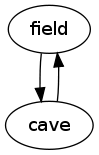

Contents
9. Code generation
|
How to program a text adventure in C
by Ruud Helderman
<r.helderman@hccnet.nl>
Licensed under
MIT License
9. Code generation
So far, our adventure has 10 objects.
Each object consists of 5 attributes
(the fields in struct OBJECT).
A real text adventure is likely to have hundreds, even thousands of objects,
and the number of attributes per object is likely to grow as well
(see the next chapter).
In its current form,
maintaining such a big list of objects and attributes would be hard.
For example, when we added objects wallField and wallCave
in the previous chapter, we had to do so in three different places:
once in object.h (as a #define),
and twice in object.c
(an element in array objs, and a separate array for the tags).
This is clumsy and error-prone.
Instead of maintaining object.h and object.c by hand,
we will start
generating
the files from a single source that is more suited to our needs.
This new source file could be in any language you like (typically some
domain-specific language),
as long as you have the tools to convert it back to C.
Below is a simple example.
Consider the following layout to organize our objects:
|
Raw C code (declarations)
|
- ObjectName
AttributeName AttributeValue
AttributeName AttributeValue
...
- ObjectName
AttributeName AttributeValue
AttributeName AttributeValue
...
- ...
|
Based on the objects we have gathered so far,
we could construct the following source file.
The file name does not matter much;
I simply named it object.txt,
to make it clear it is related to object.h and object.c.
| object.txt |
- #include <stdio.h>
- #include "object.h"
- typedef struct object {
- const char *description;
- const char **tags;
- struct object *location;
- struct object *destination;
- } OBJECT;
- extern OBJECT objs[];
- - field
- description "an open field"
- tags "field"
- - cave
- description "a little cave"
- tags "cave"
- - silver
- description "a silver coin"
- tags "silver", "coin", "silver coin"
- location field
- - gold
- description "a gold coin"
- tags "gold", "coin", "gold coin"
- location cave
- - guard
- description "a burly guard"
- tags "guard", "burly guard"
- location field
- - player
- description "yourself"
- tags "yourself"
- location field
- - intoCave
- description "a cave entrance to the east"
- tags "east", "entrance"
- location field
- destination cave
- - exitCave
- description "an exit to the west"
- tags "west", "exit"
- location cave
- destination field
- - wallField
- description "dense forest all around"
- tags "west", "north", "south", "forest"
- location field
- - wallCave
- description "solid rock all around"
- tags "east", "north", "south", "rock"
- location cave
|
I made up the
syntax
myself,
so it is safe to assume there are no standard tools to translate it to C.
We will have to write our own code generator!
Since this code generator will be a separate program,
completely independent of our adventure program,
we can write it in any language we like - not necessarily C.
Here is one possible implementation, written in
AWK:
| object.awk |
- BEGIN {
- count = 0;
- obj = "";
- if (pass == "c2") {
- print "\nOBJECT objs[] = {";
- }
- }
- /^- / {
- outputRecord(",");
- obj = $2;
- prop["description"] = "NULL";
- prop["tags"] = "";
- prop["location"] = "NULL";
- prop["destination"] = "NULL";
- }
- obj && /^[ \t]+[a-z]/ {
- name = $1;
- $1 = "";
- if (name in prop) {
- prop[name] = $0;
- }
- else if (pass == "c2") {
- print "#error \"" FILENAME " line " NR ": unknown attribute '" name "'\"";
- }
- }
- !obj && pass == (/^#include/ ? "c1" : "h") {
- print;
- }
- END {
- outputRecord("\n};");
- if (pass == "h") {
- print "\n#define endOfObjs\t(objs + " count ")";
- }
- }
- function outputRecord(separator)
- {
- if (obj) {
- if (pass == "h") {
- print "#define " obj "\t(objs + " count ")";
- }
- else if (pass == "c1") {
- print "static const char *tags" count "[] = {" prop["tags"] ", NULL};";
- }
- else if (pass == "c2") {
- print "\t{\t/* " count " = " obj " */";
- print "\t\t" prop["description"] ",";
- print "\t\ttags" count ",";
- print "\t\t" prop["location"] ",";
- print "\t\t" prop["destination"];
- print "\t}" separator;
- delete prop;
- }
- count++;
- }
- }
|
Explanation:
- Lines 9, 18, 29:
AWK scans through the input file (object.txt) line by line;
each line is tested against each of these ‘patterns’.
Whenever a match is found, the code block that follows is executed.
- Lines 1, 33:
two special patterns that match the top and bottom of the input file;
hence their code blocks are executed first and last, respectively.
- Lines 9-16:
matches any line that starts with a dash (the ‘object lines’).
The code initializes all attributes with an appropriate default.
- Lines 18-27:
following an object line, matches any line that starts with
whitespace
(the ‘attribute lines’).
The code sets an attribute value, after having validated the attribute name.
- Lines 29-31:
matches all lines that precede the first object line;
an additional filter condition disperses the lines to the correct output files
(#include lines to object.c, all others to object.h).
The code simply outputs each line unchanged.
- Lines 4, 24, 29, 35, 43, 46, 49:
the variable pass is defined upon calling AWK; see below.
We actually need to call this AWK script three times to generate the C sources:
| awk -v pass=h -f object.awk object.txt > object.h
awk -v pass=c1 -f object.awk object.txt > object.c
awk -v pass=c2 -f object.awk object.txt >> object.c
|
This will generate a new object.h and object.c,
which should be identical (save for the layout)
to the ones I wrote myself in the previous chapter.
As you can see, object.c is generated in two passes;
for object.h, a single pass is sufficient.
I could have made three separate AWK scripts, one for each pass,
but instead I made a single big script combining all three,
which seemed like the right thing to do considering the many similarities.
Our code generator script is very basic;
it does no syntax checking on the attribute values.
Most typos made in object.txt
will pass through the generator without any errors.
This is not a problem though:
the syntax checks performed afterwards by the C compiler are sufficient.
When compilation fails,
the trick is to recognize your mistakes in the C code,
then find and fix the original source in object.txt.
To make this task just a little bit easier, the least we can do is
let the code generator add some comments in the generated C code
(see object.awk line 50).
The AWK script may also pass errors over to the C compiler, by outputting
a #error directive as part of the generated code (see line 25).
Notes:
- Important:
as of now, we will not be making any manual changes in
object.h and object.c;
these would only be discarded by our code generation process.
- This mixture of languages (C, AWK and a domain-specific language)
may seem confusing at first.
Then again, this is still relatively simple compared to
the mixture of server-side and client-side techniques
the average web developer finds himself confronted with.
- Because object.txt
is converted to plain C code, compiled, and linked with the other modules,
all of its data will be part of the final executable.
Like any source file, object.txt does not have to be present
when the executable is running (i.e. when somebody is playing the game).
This, of course, is just a matter of choice.
It is very well possible to keep the data apart from the executable,
and have the executable import the data from object.txt at
runtime.
This is particularly interesting when you are building your own
adventure development system.
Do keep in mind that it will make your code slightly more complicated;
you will have to put more effort in
parsing
object.txt, since there will be no C compiler to back you up.
All this is outside the scope of this tutorial;
we will focus on using the benefits of the C compiler as much as possible.
Visualization
When it comes to choosing a domain-specific language,
keep in mind that code generation is not its only benefit.
A simple AWK script, similar to the one above, can be used to
visualize
a map of your virtual world by
drawing a graph.

| map.awk |
- BEGIN { print "digraph map {"; }
- /^- / { outputEdges(); delete a; }
- /^[ \t]/ { a[$1] = $2; }
- END { outputEdges(); print "}"; }
- function outputEdges()
- {
- outputEdge(a["location"], a["destination"]);
- }
- function outputEdge(from, to)
- {
- if (from && to) print "\t" from " -> " to;
- }
|
Explanation:
- Line 2:
at the start of every object in object.txt,
first finish the output for the previous object (outputEdges),
then make a fresh start by clearing the collection of attributes
(array a).
The delete statement may not work on older
AWK
implementations.
A more portable (but less readable) alternative is:
split("", a);
- Line 3:
every attribute in object.txt is added to array a.
The key of the array element is the attribute name (e.g. location).
- Line 4:
at the end of object.txt, we finish the output for the final object.
Execute this script with the commands below,
and object.txt will be converted into map.png;
the picture you see on the right.
Please note that this picture is not part of the game;
it is a spoiler and should not be revealed to the player.
It‘s here to help the developer spot mistakes in object.txt.
| awk -f map.awk object.txt > map.gv
dot -Tpng -o map.png map.gv
|
Notes:
- For the command dot to work, you need to install
Graphviz
first.
- Notice how this picture matches the map I drew by hand in chapter 6
(except for the orientation).
Our map is still very trivial,
but as the number of locations grows, this soon becomes a useful tool
to validate object.txt against your intended map.
- I have used
DOT
as an intermediate language here (map.gv).
If your adventure has a really complex map,
you may even consider using a graph editor to design your map,
then try to generate C code from the resulting DOT output
(or whatever graph description language the editor is capable of).
This is a great way to design your locations and passages,
and it gives you far better control over the graphical presentation of the map.
However,
this approach may be less suitable to maintain the other objects and attributes.
Makefile
Calling AWK manually each time object.txt has been modified,
soon becomes tedious.
It is best to make these calls part of your build process.
For example, a simple
makefile
for our adventure might look like this:
| makefile |
- all: success.txt src.zip map.png
- C = object.c misc.c noun.c location.c move.c inventory.c parsexec.c main.c
- H = object.h misc.h noun.h location.h move.h inventory.h parsexec.h
- success.txt: lilcave testscript.txt baseline.txt
- ./test.sh
- mv -f transcript.txt $@
- lilcave: $(C) $(H)
- gcc -Wall -Wextra -Wpedantic -Werror $(C) -o $@
- object.h: object.awk object.txt
- awk -v pass=h -f object.awk object.txt > $@
- object.c: object.awk object.txt
- awk -v pass=c1 -f object.awk object.txt > $@
- awk -v pass=c2 -f object.awk object.txt >> $@
- map.png: map.gv
- dot -Tpng -o $@ $<
- map.gv: map.awk object.txt
- awk -f map.awk object.txt > $@
- src.zip: $(C) $(H) object.txt makefile testscript.txt baseline.txt
- zip -rq $@ $^
- clean:
- $(RM) object.c object.h lilcave map.gv map.png transcript.txt success.txt src.zip
|
Explanation:
- Lines 6-8:
this rule performs an automated test.
This is explained in chapter 17.
- Lines 10-11:
this rule builds the executable lilcave.
You may need to specify a different target name as dictated by your OS
(e.g. lilcave.exe in Microsoft Windows).
If your source files become so big (or your build machine is so slow)
that full rebuilds become tedious,
then feel free to split up the rule into separate build and link rules.
- Lines 13-18:
these rules generate object.c and object.h.
Notice I specified not only object.txt,
but also object.awk as a prerequisite.
Although technically,
object.awk is more of a development tool than it is a source file,
it is still subject to change;
already so in the next three chapters.
- Lines 20-24:
these rules generate the map image.
- Lines 29-30:
it is customary to have a separate rule to delete all targets and intermediate files.
Now a single command make will do everything that is necessary
to construct an executable and a map image.
Next chapter: 10. More attributes